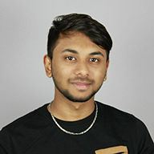
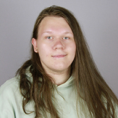
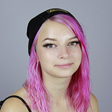
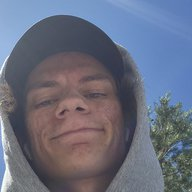
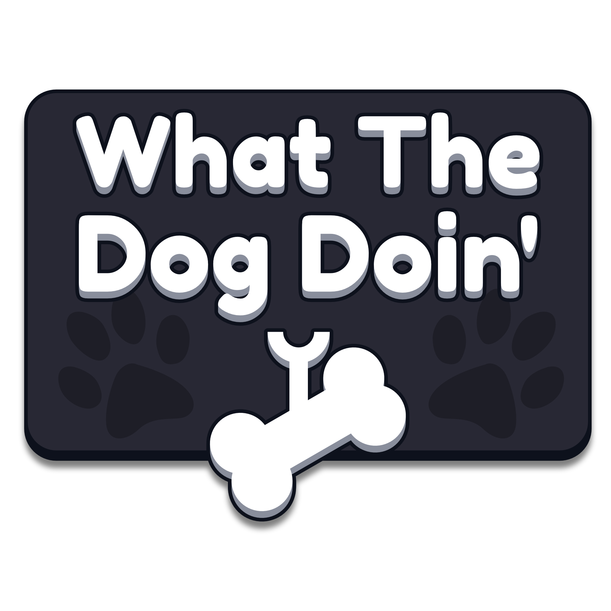

Roguelite Twin-Stick Shooter
Project Summary
Morris: Mortality Rate is an isometric dungeon crawler shoot 'em up game all about strategic decision making and fast
paced gunplay. Take control of the teddy bear Morris and battle your way through a huge factory by surviving through a
sprawling series of rooms filled with dangerous robot enemies. Improve your arsenal of weapons and your physical
attributes along the way to aid you in your battle against the evil AI terrorizing humanity.
Our goal for this project was to produce a polished game with as much content as possible for the players to enjoy.
Given our time constraints, we felt that a procedural rogue-lite game would offer the greatest amount of mechanical
replayability possible.
Project Breakdown
6 Week Group Project
9 Team Members
Powered by Unreal Engine 5
Platforms: Windows

My Responsibilities
Project Owner: game vision, meetings, decision-making and presentations, as well as scrum master.
Hands-on-Designing: prototyping, iterative gameplay- and user experience design.
Systems Implementation: responsible for integration of integral gameplay systems and elements.
My Contributions
This six-week project was all about teamwork. We had an ambitious scope and we needed to work efficiently to get the game where we wanted it in the few weeks we had. My role in this venture saw me wearing many hats, each one challenging yet rewarding in its own unique way. It was a very stressful experience, but it resulted in a project that I feel proud of.
Game Design
The project began with a blank canvas and the excitement of possibility. I was entrusted with the responsibility of designing the game from scratch and writing the Game Design Document. Though I had final say on our decisions, the team had a lot of interesting and exciting ideas for features, mechanics, animations, guns, and more. Everyone had suggestions and was involved in shaping the game. My co-designer Hari created most of the rooms used in the level, and I was responsible for the rest of the design work, like designing and balancing the 37 guns that we have in the game. It was a lot of very intense work in many different disciplines, from which I learned a lot.
Project Management
In the role of project manager, I found myself in the position of a guiding hand, ensuring the team remained focused and efficient. I was the scrum leader every morning, and I also handled the task of balancing resources, managing timelines, and coordinating efforts across the team.
Gameplay Mechanics and User Interface
Diving into gameplay mechanics and UI design allowed me to bring some creativity to problem-solving. I helped devise a functioning door system, contributed to an immersive sound system, and designed an intuitive HUD, all of which contributed to the gameplay polish.
Testing and Debugging
Quietly crucial in its role, testing and debugging became an area where I could contribute significantly to the game's polish. Spotting and fixing bugs (and there were a lot), ensuring that our final product was as seamless as possible, was a rewarding, behind-the-scenes role that I was happy to fill.
Sound Design and Dialogue Writing
Finally, my explorations in sound design and dialogue writing were quite the adventure. Curating a collection of sounds and even writing the voice lines for our shopkeeper NPC felt like another step in giving life to our game. Seeing (and hearing!) these elements in the final product was a joyous moment for me.
Conclusion
All in all, my contributions to the project were wide spanning and focused a lot on both the team and my individual work. I ended up having to take a lot of responsibility for the game, stepping in to help wherever we were struggling in the process. The satisfaction and pride I feel are less about the specific tasks I accomplished, and more about the successful result of our teamwork and the rewarding journey we embarked on together.
Read More!My Team
During this six-week project, I had the privilege of collaborating with the talented group of students making up our team What The
Dog Doin' Studios. I had a lot of fun working with each of them. Their creativity, technical acumen,
and commitment to teamwork were key drivers behind the project's success.
Each member brought unique skills and perspectives to the table. We faced numerous challenges together,
one of the most significant being the integration of our procedural generation system together with hand-made sections.
This task turned out to be more complex than we initially anticipated. However, with our collective problem-solving
capabilities, we managed to overcome this hurdle and produce our intended result.
I recall one particularly memorable evening when we were in a race against time. One of our team members had accidentally broken
the project the night before delivery, resulting in a fully functional product for our deadline the next day.
Working with such an exceptional team has not only resulted in a successful game project but has also been an
enriching experience. It enhanced my understanding of the power of effective collaboration and deepened my appreciation for diverse skill sets.
The other members of the team:

Hari Murali

Oskar Lindahl

Felicia Lindgren
Victor Fröjd
Ellinor Levin

André Valand
Anton Winqvist
David Bern
